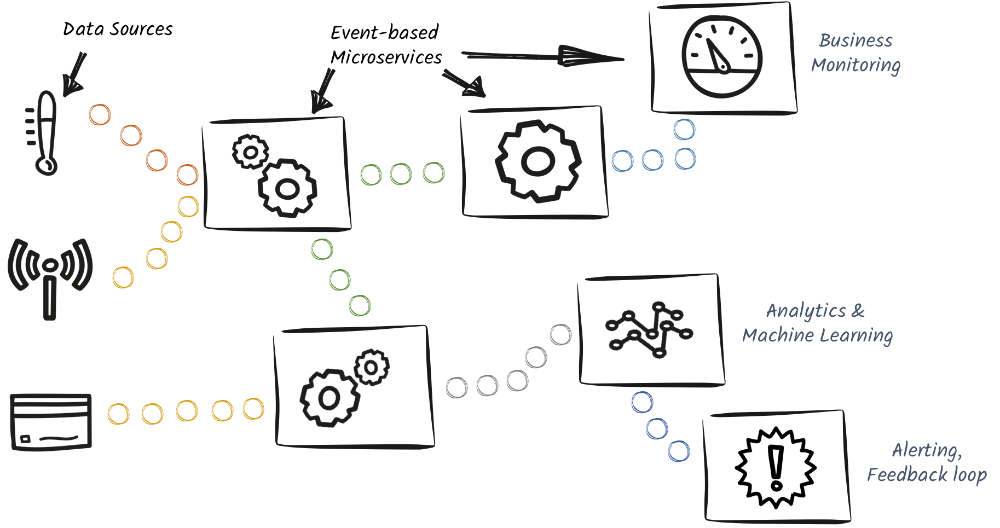

SmallRye Reactive Messaging is an implementation of the (next to be) Eclipse MicroProfile Reactive Messaging specification. It provides a way to implement reactive data streaming application using a CDI development model.
It provides:
-
a development model to build data streaming applications
-
connections for Apache Kafka, AMQP 1.0, MQTT, Apache Camel…
-
a way to inject manipulated streams into regular CDI beans and JAX-RS resources
SmallRye Reactive Messaging enables data streaming application, event-driven and asynchronous microservices, event sourcing applications…
